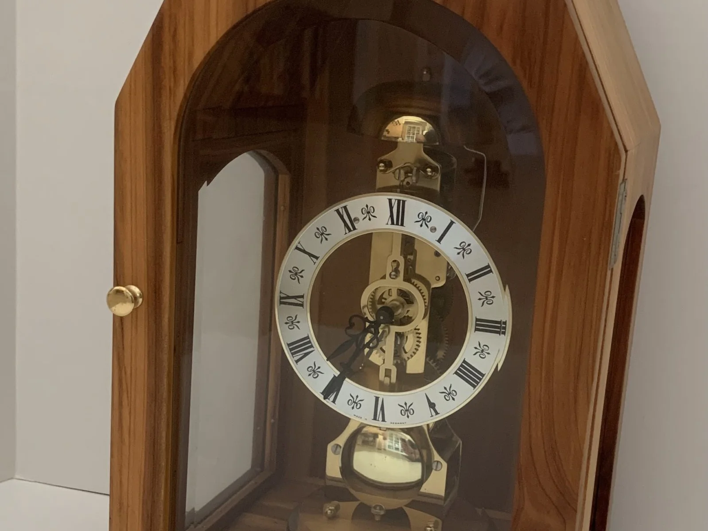
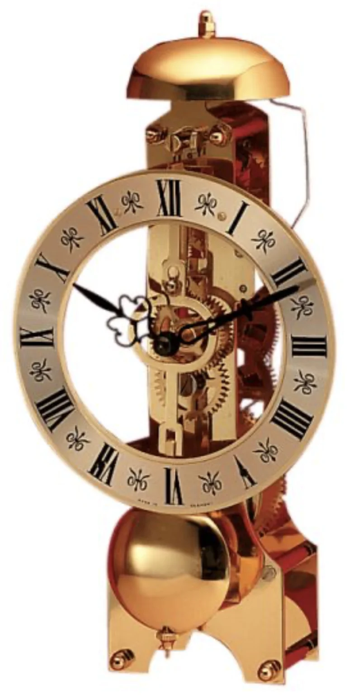
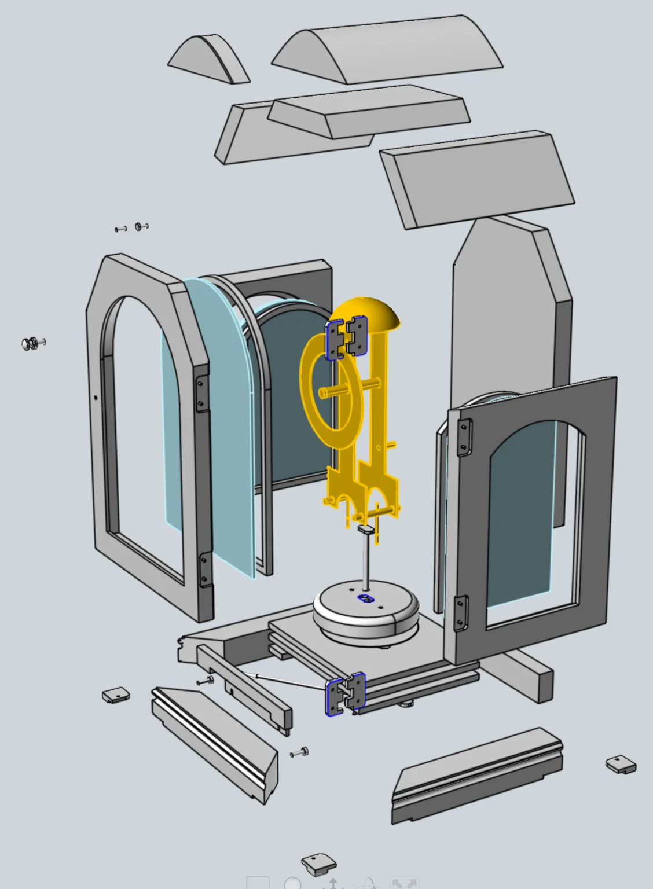
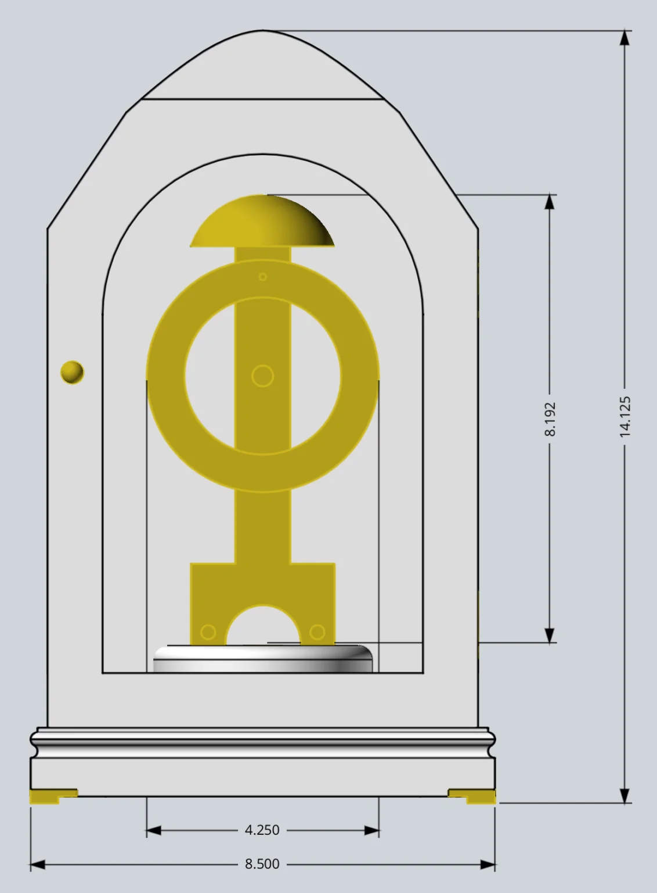
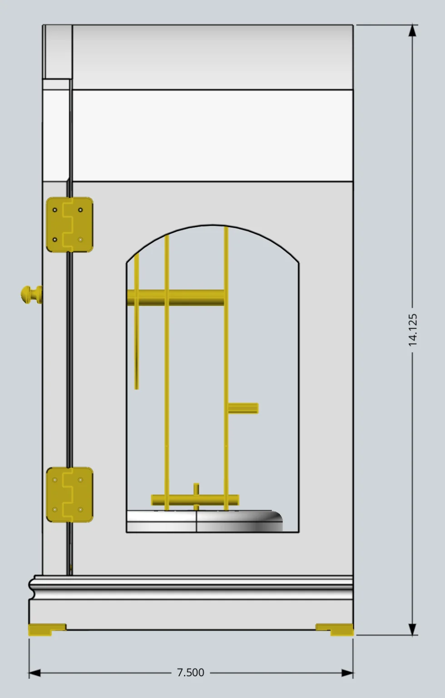

Mantel Clock
{kind=link}

A mantel clock built from Colorado cedar, with a Hermle pendulum movement and a rotating pedestal base for rear-access winding. Free 3D CAD files available.
I designed and made this clock in memory of my Colorado grandparents. My grandfather, who was a skilled craftsman and taught me so much, harvested a Colorado cedar tree near Burns, CO in 1928. Why you ask? Well, he was going to be a new father and wanted to make a cedar chest to store my mother’s baby clothes.
Now you may be wondering how I managed to get some of these cedar planks cut in 1928? Well, many years later during one of my visits to Colorado as an adult grandchild, my grandfather and I were sorting through his workshop attic and I noticed some old, dusty, cedar planks laying on the floor. After telling me the history, my grandfather asked if I wanted the wood, which I readily accepted. Years later after both grandparents had passed, I created this mantel clock in their memory.
My design includes a nice Hermle pendulum clock movement (model 791-681) which you wind from the back. So I designed the round pedestal to rotate 180 degrees using a push-pull rod located behind the door. Simply open the door; pull the rod to rotate the platform 90 degrees; and then push the rod to rotate the platform another 90 degrees, which makes the clock winding post accessible. Of course you just reverse this process to reposition the clock, then store the rod, and close the door, which is held in place using a small, embedded magnet.
Supplies
Materials & Hardware
- Colorado cedar planking (cabinet)
- 1/8″ plywood, multi-layer (door frame reinforcement)
- 1/4″ plywood, two layers (below the cedar, to complete the floor)
- Hermle pendulum clock movement, model 791-681
- Solid brass hinges, feet, and push-pull rod
- 1/8″ thick aluminum strap (center-mounted crank lever, push-pull rod horizontal guide)
- 1/4″-20 nylon lock nuts, 2
- Thin textured plastic ‘bearing’ washer (rotating pedestal, cut to match the hole pattern — the maker used plastic milk-container material)
- Glass panes, 1/8″ thick — flat side panes, beveled front pane
- Small brass nails (glass pane retainer strips)
- Small embedded magnet (door catch)
Consumables
- Clear satin spray lacquer
- Photo-mount spray adhesive (paper templates)
Tools
- Router (hinge and feet recesses)
- Clamps
Pulled from the instructions PDF — quantities weren’t specified in the original write-up beyond what’s listed here.
Construction Tips
My mantel clock design is a bit more difficult to build than some of my other projects. The rotating pedestal requires some tinkering to get the mechanical parts working correctly. But once you’re done, you’ll have a very nice family heirloom.
Tip… Hit the easy button! Replace the rotating pedestal with a simple access port in the cabinet back. Just make sure your clock winding key is long enough to reach the winding post through your back access port.
As I mentioned earlier, I used cedar to make my clock cabinet. But the cedar planking thickness varied, so the thickness of some pieces aren’t typical standard dimensions. I also used some 1/8″ plywood (multi-layer) to strengthen the door frame, and two 1/4″ plywood layers were used below the cedar to complete the floor.
Tip… If my cedar planks had been a standard 3/4″ thick, I’m sure my design could have been simpler. Simpler is usually better, so tweak the 3D CAD model to meet your requirements.
I purchased solid brass hinges, feet, and push-pull rod. I used my router to carefully cut out the recesses to match the hinges and feet. 1/8″ thick aluminum strap was used for the center mounted crank lever and also the horizontal guide that supports the push-pull rod. The two 1/4″-20 nuts are nylon lock nuts.
Tip… I wanted the rotating pedestal to turn smoothly, so I added a thin, plastic ‘bearing’ piece between the cabinet floor and the rotating pedestal. I’ve found that the textured plastic used for typical plastic milk containers works great. So I just cut out and used a flat plastic ‘washer’ with the correct hole pattern.
I purchased the glass panes from a local glass supplier. I printed templates matching the pane sizes which the glass supplier used to cut the glass. The side panes are simple, flat glass panes (1/8″ thick), but the front glass is beveled, which I felt provided a more elegant look.
Tip… For smaller projects like this one, I like to print paper templates for the curved parts. I temporarily stick the templates to the part using a photo-mount spray adhesive. Then once I have the part cut out, the template is easily peeled off.
With the exception of the glass pane retainer strips, the wood cabinet pieces were all glued and clamped to avoid any exposed fasteners. I used small brass nails to attach the glass pane retainer strips.
Tip… The small glass pane retainer strips are pretty fragile. So I pre-drilled the nail holes to avoid splitting the wood.
I finished the wood cabinet using a clear satin spray lacquer. My workshop doesn’t have a real spray painting booth, so the fast drying lacquer helps minimize the amount of dust that settles onto the finish.
Final Thoughts
I hope my brief description has inspired you to make your own mantel clock — you’ll definitely want to use the 3D CAD model I’ve provided to better identify all the parts and their respective attributes.
Image Gallery



